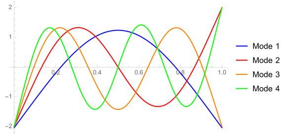

| Home | Solid-bar Wind Chimes | Chime Trees | Tubular Wind Chimes | Echoes | Chirag Gokani |
|---|

A 21-piece inharmonic chime tree, spanning an interval of a 12th.
I handcraft wind chimes and chime trees of solid-bar and tubular varieties. I precisely tune every chime, making them ideal for acoustical research, musical performance, and ambient listening. All proceeds benefit the North Texas Food Bank.
